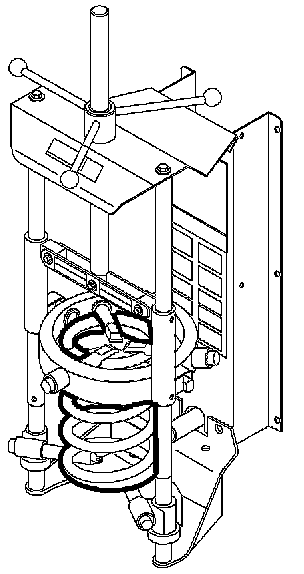
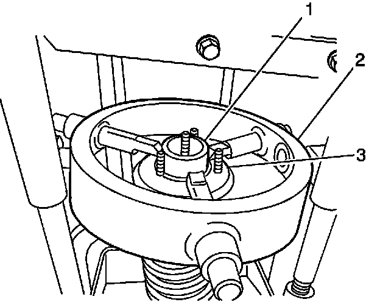
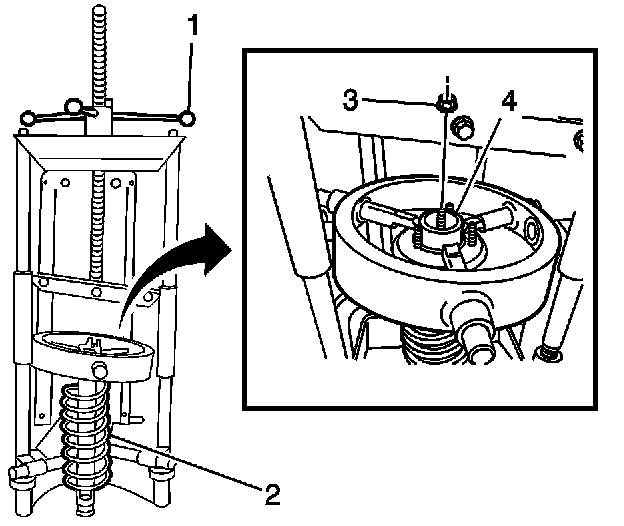
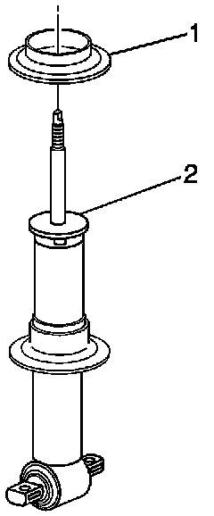
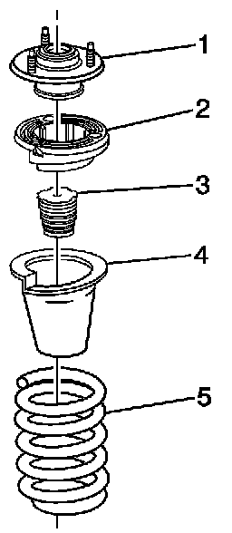
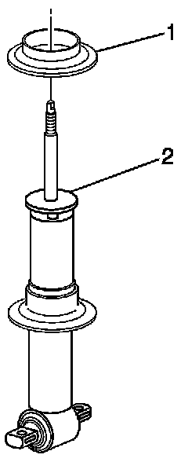
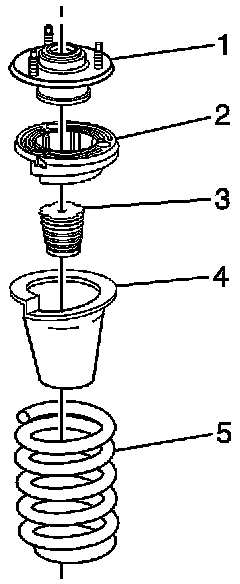
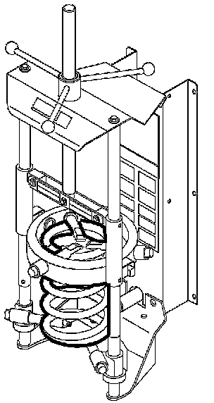
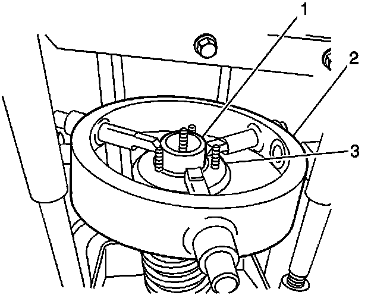
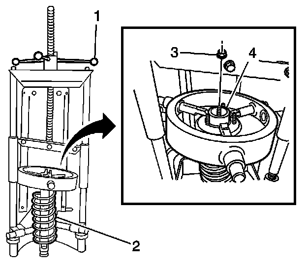

Suspension - Revised Shock Component/Spring Replacement
Bulletin No.: 07-03-08-008Date: October 31, 2007
SERVICE MANUAL UPDATE
Subject:
Revised Shock, Shock Component, and/or Spring Replacement
Models:
2007-2008 Cadillac Escalade Models
2007-2008 Chevrolet Avalanche, Silverado, Suburban, Tahoe
2007-2008 GMC Sierra, Yukon Models
This bulletin is being issued to revise the Shock, Shock Component, and/or Spring Replacement procedure in the Front Suspension sub-section of the Service Manual. Please replace the current information in the Service Manual with the following information.
The following information has been updated within SI. If you are using a paper version of this Service Manual, please make a reference to this bulletin on the affected page.
Special Tools
J 45400 Spring Compressor
Removal Procedure
Use only hand tools to perform the following service procedure.
The following service procedure is to be performed after the strut assembly has been removed from the vehicle and installed in the appropriate tool.

Install the shock absorber assembly in the J 45400.

Ensure that the fingers for the spring compressor are properly adjusted on the top of the front suspension mount. Position the shock absorber assembly (3) in the J 45400 (2) so that the fingers are properly seated on the top of the front suspension strut mount (1).

Note the orientation of the upper spring seat, spring, and the shock before the they are to be removed. This will aid in the proper align during the installation procedure.
Using the J 45400 (1), compressed the front spring (2).
Remove and discard the nut (3) from the shock (4). DO NOT reuse the nut, use NEW only.

Remove the front suspension shock absorber (2), and the front spring lower insulator (1).

Remove the front suspension strut mount (1), front spring upper seat (2), front suspension strut bumper (3), front spring upper insulator (4), and the front suspension spring (5) from the spring compressor.
Installation Procedure

Install the front spring lower insulator (1) on the shock absorber (2).

Assembly the front suspension strut mount (1), front spring upper seat (2), front suspension strut bumper (3), and the front spring (5).

Install the front suspension spring and related components in the spring compressor.

The fingers for the spring compression must be adjusted so that the spring is properly seated in the spring compressor.
Adjust the fingers (1) for the spring compressor (2) on the front suspension mount (3) so that the fingers (1) are properly seated on the top of the front suspension strut mount (3).
Align the upper spring seat, spring, and the shock absorber as noted during disassembly.

Using the J 45400 (1), compress the spring assembly (2) enough to install the NEW nut (3). Install the shock absorber (4).
Refer to Fastener Notice.
Install the NEW nut (3).
Tighten
For vehicles equipped with electronic suspension, tighten the nut (3) to 50 N.m (37 lb ft).
Tighten
For vehicles without electronic suspension, tighten the nut (3) to 60 N.m (44 lb ft). Remove the shock absorber assembly from the spring compressor.
Install the strut assembly in the vehicle. Refer to Shock Absorber and Spring Assembly Replacement.

Disclaimer